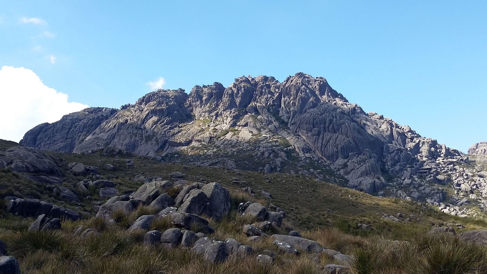

Agulhas Negras
O pico das Agulhas Negras é o ponto culminante do estado do Rio de Janeiro, com 2791,55 metros de altitude. É o quinto ponto mais alto do país segundo dados do IBGE de dezembro de 2004 (IBGE, 2011). Está situado no Planalto do Parque Nacional do Itatiaia, bem na divisa entre os municípios de Resende e Itatiaia. A paisagem que avistamos do seu topo é extraordinária, abrangendo parte dos estados de Minas Gerais, São Paulo e Rio de Janeiro. As Agulhas Negras são formadas por rochas intrusivas – se originam de uma erupção na qual o magma se consolidou no interior da crosta terrestre, esfriando lentamente. O nome do maciço tem origem nas caneluras, ou canaletas, sulcos verticais que vistos de longe lembram agulhas paralelas umas às outras. O visitante tem a opção de caminhar apenas até a base ou seguir até o cume, sendo essas opções escolhidas já no Posto Marcão, onde existe hoje o controle de visitantes.
